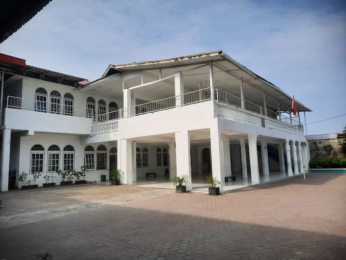

Selamat Datang di SD PLUS MARHAMAH
Sekolah Dasar BERSERI (Berprestari, Religius, Santun, Edukatif,Ramah dan Inspiratif).
Sejarah
SD Plus Marhamah didirikan pada tahun 2003 sebagai wujud kepedulian terhadap pentingnya pendidikan dasar yang berkualitas dan berlandaskan nilai-nilai keislaman. Sekolah ini berada di bawah naungan Yayasan Marhamah, yang dipimpin oleh Ketua Pembina Yayasan, Ibu dr. Mardiah Harun, M.Ed.
Didirikan dengan semangat membentuk generasi yang cerdas, berakhlak mulia, dan berwawasan luas, SD Plus Marhamah mengusung konsep pendidikan terpadu antara kurikulum nasional dengan penguatan nilai-nilai keagamaan. Sejak awal berdirinya, sekolah ini berkomitmen untuk menciptakan lingkungan belajar yang kondusif, aman, dan inspiratif bagi anak-anak.
Dengan dedikasi para pendidik serta dukungan penuh dari yayasan, SD Plus Marhamah terus berkembang dan dipercaya masyarakat sebagai lembaga pendidikan dasar yang unggul dalam membentuk karakter dan prestasi siswa.Hingga saat ini, di tahun ajaran 2024/2025 berjumlah 475 siswa./